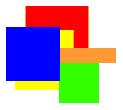
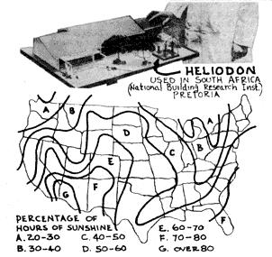
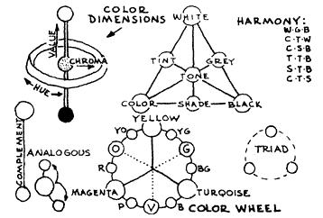

Issue # 25 - January/February 1974
THE OWNER BUILT HOME, VOLUME 3, CHAPTER 8
LIGHT and COLOR
The modern tendency for a professional expert to overemphasize the importance of his particular field (to the neglect of other, equally important fields) is as common an occurrence in the building business as it is anywhere else in our over-specialized work-world. Illumination experts, for instance, specify an artificial light intensity of from 50 to 100 foot candles for most visual tasks. But experts in the field of light and color conditioning warn against the use of more than 30 to 35 foot-candles (they quote opthalmologists who say that visual efficiency rises sharply as light intensity is increased to a level of about 30 foot-candles). Further light intensity is apt to cause visual distraction and glare.
Electrical engineers devise ingenious ways to provide high intensity daytime artificial lighting to rooms that are blocked off with one value walls used for storage and insulation. Millions of dollars are wasted on artificial illumination for want of basic knowledge of natural daylight design. On the other hand, those engineers who choose to work with natural illumination become confronted with over-complicated design formulas. The complication lies in the fact that natural illumination may be direct from the sun, indirect from the sky, and reflected from the ground. Consequently, more and more complicated-and expensive-control devices are resorted to, such as reflectors, glass prisms, plastic louver walls, hanging louvers, and diffused glazing materials of all sorts. Some lighting engineer extremists, like West Coast expert Foster Sampson, tell us that, "it really doesn't make much sense to get light through windows in the vertical wall." Skylights and clearstory windows become alternative solutions. Skylights, of course, are a very effective means of interior lighting. Improved "sky dome" varieties have been recently developed, with two layers of frosted or translucent material to eliminate bright spots of sunshine and provide air-space insulation.
It is practically impossible for those of us owner-builders who must use the common, garden-variety glass window to retain a working knowledge of all the many factors that effect a harmonious lighting arrangement. Actually, there is only one type of inexpensive control device available-the Venetian blind. Most current lighting research concludes that Venetian blinds are the most effective and flexible means of control. They increase the light level at the far side of a room as much as 34%. Ground-light is admitted, as well as sky illumination, by each reflectorslat. Thus the Venetian blind is the best "stop-gap" device to employ where there has been a failure or breakdown of basic lighting design concepts. But the owner-builder, without becoming an illumination expert, may achieve comfort and beauty by understanding certain principles.
The design criteria of room and window sizes, placement proportions, overhang design, and solar orientation must be coordinated to basic natural conditions such as the latitude and altitude of the budding site, and the time of year and time of day. Later we will see how colors also affect lighting and lighting design. Consequently, the owner-builder who expects to approach his construction project seriously needs a design-aid that will indicate at a glance the fight penetration and extent of shading for every opening in his house, at his exact latitude, for any day of the year and hour of the day. This may sound like an impressive requirement for a simple design-aid to accomplish, but as a matter of fact the heliodon, or "sun machine," can do all this, and can be homemade at little cost. Send for detailed construction blueprints.
A heliodon is simply a simulated sun device. In using it one must first make a cardboard scale-model of the proposed house, omitting outside walls and roof. As the winter and summer month solar angle is observed directly from the heliodon, window sizes and ceiling heights can also be determined.
If special solar problems occur it may be necessary to shift the orientation of the house, or locate vegetation and shading devices on the plan. One of the attractive features of house designing from model and heliodon is that it encourages a "play" element in manipulating walls and roofs, in adjusting rooms and plan. One verily "lives" with his three dimensional creation as the juxtaposition of separate spaces takes place to form the completed whole.
Contrast this perceptive approach to the lighting problem with the hit-or-miss approach of the average tract-house builder; even one extra day devoted to lighting design subtracts from the profit-earning, nail-pounding, cement-pouring production of the competitive builder. An owner-builder, on the other hand, might do well to space his time over a full season in planning and designing his home. From his scale house model and heliodon he can determine the best lighting arrangements. In view of the many years one expects to live in the personally planned dwelling, one day devoted to lighting and color design is little enough time indeed.
The first step in developing a design procedure for light and color is to determine the value of average outdoor illumination for the specific section of the country one lives in. The average annual number of clear days gives some indication of this. The percentage of light failing on a surface which is not absorbed, but reflected, should be graded between the light source and the dark surrounding surfaces for walls, ceilings and floor in rooms receiving varying amounts of light. In order to grade the bright ness for a ceiling light, the ceding should be given a "reflection factor" of 80%. A reflection factor of 25% is acceptable on end walls in a room with ample daylight. In a deep, poorly lighted room, on the other hand, the wall opposite the window should have a reflection factor of 70%. The window wall itself, as well as frames and mullions, produces less glare when the reflection factor is high-80% or more. Floors should have a reflection factor of 25%.
Dark blue and black have low reflection factors; yellow and white are high. The amount of light reflected from various color surfaces is as follows: white 80%-90%; pale pastel (yellow, rose) 80%; pale pastel (beige, lilac) 70%; cool colors (blue, green pastels) 70%-75%; full yellow hue (mustard) 35%; medium brown 25%; blue and green 20%-30%; black 10%.
Colors of short wave length (green, blue, violet) create an impression of being cool; colors of long wave length (yellow, orange, red) appear warm. Warm colors are sharply focused and have apparent qualities of lightness, activeness and advancing movement; cool colors are less sharply focused and seem to be heavy, passive and receding. An obvious but seldom practiced rule is to use warm colors in rooms that are exposed to the north, or that receive little sunlight. Cool colors are best used in rooms of a southern exposure. Soft, cool colors should be used in cloudy regions, and strong, warm colors in sunny regions. Light rooms should be decorated in strong, colorful contrasts. Stronger, brighter colors can be used in large rooms, whereas low color contrasts and weak, light patterns are best used to make small rooms appear larger.
The story is told of a manufacturer who redecorated his lunch room walls from peach to light blue. Soon the employees began to complain that it was chilly inside the lunch room. The actual temperature had not changed, being thermostatically controlled. When the walls were repainted peach, and orange slip-covers were placed on the chairs, the complaints ceased.
The sustained thought needed for a balanced light and color design is conveniently circumvented today by an increasing number of builders who use the "natural" approach: wood ceilings are stained or lacquered; prefinished plywood wall panels are chosen on the merits of wood grain; even imitation wood or cork floor tile is chosen to match the "natural" wood tones used everywhere else. This so-called "natural" approach was given weight by Frank Lloyd Wright, whose building interiors had a drab sameness throughout. Wright, who called those who employed paint and trim "inferior desecrators," clearly overdid his principle of "naturalness of material."
Compare this timid decorative approach to that of a dynamic designer who understands his light and color principles and uses them to achieve definite results. For example, we have a designer telling about his use of light and color in the principal's office at the Waterdloof Primary School, South Africa:
The character needed for a principal's office is fairly complex. The first impressions of children entering school are formed here. This demands a friendly, colourful atmosphere. The office is also used for receiving inspectors, teachers, and parents and should therefore be fairly dignified, in keeping with the status of the principal. Office work will require a fairly subdued and quiet atmosphere which is not distracting. Because the room faces into a little court, it may feel rather warm in summer, so a feeling of coolness is desirable. Fairly cool colours are indicated also by the fact that very often only irate parents come to see the principal, and they need to be calmed down.
The bright, stimulating colours that children like can be used at a low level, out of the line of vision of the adults. It was decided to use red floor tiles in spite of the fact that red aggravates bad temper. An angry person generally does not look down, whereas a despondent person might.
Psychologists say that 85% of our impressions come through our eyes. Light and color correctly used will create just about any impression desired. In a house we should strive for a variety and sequence of impressions, from excitation to sedation, from room to room. Color should be optically balanced. For instance, a small entry hall with walls of yellow brick leading to a predominantly blue living room will emphasize the cool spaciousness of the living room. An excitable impression can be created by a sequence of bright illumination and warm colors, followed by a sudden exposure to cool colors and dim illumination. Finally, a restoration of bright illumination will create the desired effect.
Where an impression of sedation is sought, one should decorate one space with cool colors and low illumination. A final, gradual restoration to the first condition will give the impression of sedation. A dramatic interior effect can be achieved by using a maximum of color contrast with abrupt transitions of value and hue. On the other hand, a static interior effect is created by using a maximum degree of symmetry and parallelism, repetition and continuity.
The degree to which color creates a stimulating or depressing environment is little appreciated by the average home decorator. Red, for instance, has been found to increase a person's hormonal and sexual activity, as well as restlessness and nervous tension. Time is overestimated in red surroundings, and weights seem heavier. Blue, on the other hand, has opposite qualities: it tends to lower blood pressure and pulse rate. It is a restful and sedate color. In blue surroundings time is underestimated and weights are judged as being lighter. Green tends to reduce nervousness and muscular tension. It is the best color choice for sedentary tasks, concentration and meditation. Yellow produces a favorable effect on human metabolism; it is sharply focused by the eye and cheerful in appearance. Chrome yellow has been found excellent for shell-shock victims.
This brief discussion of color brings to mind the wide variety of conditions that contribute to the actual choice of a room. A room color can be chosen on the basis of the hair color of the person using it: a blonde looks best against a background of blue or violet-blue, while a brunette looks best amid warm, light colors. A person having brown hair looks best in green surroundings, and a redhead looks best in a room having cool green-blue hues. A white or grey-haired person looks best against any brilliantly colored background.
Color choice can also be made on psychological grounds. An extroverted person, for instance, prefers high degrees of illumination, amid warm and luminous room surroundings (yellow, peach, pink). An introverted person requires softer, cooler surroundings amid a lower brightness level. Grey, blue, and green are best suited to this personality type.
Another good basis for color choice has to do with a room's function and form. It is interesting to note that the psychological effect of every color is represented in a tangible two-dimension form. Red impresses one as a square form; yellow, as a triangular form; orange, as a rectangular form; green, as a hexagonal shape; blue, as a circle; and purple, as an ellipse. The shape of a room or building can thus be expressed in color, depending upon whether the room is angular, squarish, curvilinear.
Room colors should be balanced between warm and cool tones, and between active and passive designs. The handling of proportion, pattern, texture, and room-form contribute to the proper choice of color harmony. But primarily, the color choice depends upon what particular function is emphasized. A living room, for instance, is best decorated in warm tones to stimulate a convivial mood. A more formal atmosphere is achieved by an accent on blue tones. Grey is always a good choice for balance and harmony. It is the least distracting of all colors, and most effectively hides dust and soiling. The sense of cheer, comfort, warmth and relaxation so desirable in a dining room is best achieved by the use of medium dark, cool color values. Peach, however, is found to be the most appetizing of all tints. Color in a kitchen should be light, cool, bright and generally cheerful as well as semi-glossy. Green and turquoise tend to shorten the apparent passage of time. A restful, relaxing bedroom atmosphere is best achieved by the use of warm, light colors. Strong color contrasts encourage early rising. Grey, the "peacemaker of colors," is restful when warmed with an admixture of yellow or red. For the master bedroom a light sky-blue suggests the illimitable together with a rare quality of allurement. Lighter and cleaner hues should be used in bathrooms to give sensations of good health and vigor. White and blue look fresh and clean but pink gives the skin a luminous glow through reflection. Storage or dark areas should be painted yellow or white.
Ever since Francis Bacon, inventor of the first color-wheel, men have speculated about color harmony and balance. This happens to be a highly subjective field of study, so naturally hundreds of color theories and systems have been proposed. Some basic premises have survived the ages, and more recent studies on the subject have arrived at a simplified charting of color harmony.
There are three dimensions to color: hue refers to the particular pure color itself; chroma refers to color intensity, or saturation, from grey to the pure color, or hue; value refers to the light and dark degrees (tints and shades) of a color. By mixing white or black in a color a variety of tints and shades are possible.
Faber Birren devised a neat little chart showing the harmonious relationships among the seven different color possibilities. As per diagram, any straight path between each of the seven forms will lead to concordant beauty.
Basic laws of color harmony call for the use of color in pairs to produce balanced stimulation to the color-sensitive eye nerves. Eye fatigue results from over-exposure to one color; relief will come with the introduction of the "after-image," or complementary, of the color. For instance, eyes fatigued with too much red seek green; when saturated with yellow, they call for purple; when tired of green, they call for violet and red. This complementary relationship forms the basis of our modern color wheel. It is made up of the three primary colors (yellow, turquoise and magenta) and three secondary colors (green, violet and orange). Then six intermediate colors come in to complete a 12-color wheel having pure hues.
The complement, or opposite, color-relationship is the simplest pattern for two-color harmony. Analogous harmony can be achieved by using adjacent colors. Here interest is achieved by contrast of value, using light tints and dark shades of one principal color. A third and very commonly used formula for color harmony is the triad. Here the three colors chosen are equidistant on the colorwheel, forming a "Y".
A desirable color-scheme for any room or area depends much, of course, on its relation to surrounding colors, forms, textures, and patterns. The owner-builder should choose colors with his overall design in mind.
BIBLIOGRAPHY (books listed in order of importance)
New Horizons in Color: Faber Birren.
Lighting Your Home: Sunset Books, 1963.
Color Form and Space: Faber Birren.
Ken Kern, author of THE OWNER-BUILT HOME and THE OWNER-BUILT HOMESTEAD, is an amazing fellow and everyone interested in decentralist, back-to-the-land, rational living should know his work. Back in 1948 he began collecting information on low-cost, simple and natural construction materials and techniques. He combed the world for ideas, tried them and started writing about his experiments.
Eventually, Mildred Loomis started publishing Kern's articles in THE INTERPRETER, WAY OUT and GREEN REVOLUTION. Ken has also issued a three-year series of pieces (called TECHNIC) on his own and a greehouse-sun pit design of his has been featured in ORGANIC GARDENING.
This series of Ken Kern's work is being taken both form OWNER-BUILT HOME (already published) and OWNER-BUILT HOMESTEAD (to be published). To give you advance chapters of HOMESTEAD as they are written I have to break my presentation of HOME on an irregular basis for which I apologize. If you want HOME all at once it's available right now direct from Ken Kern, Sierra Route, Oakhurst, California 93644 for $10.00. -MOTHER
|
 |
 |
 |